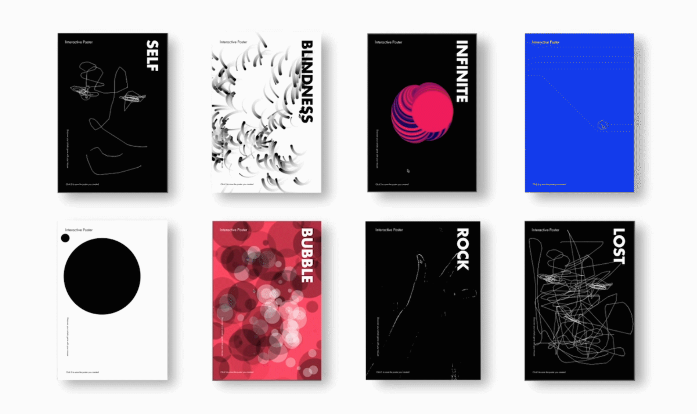

Playful Interaction
Assignment A: New Playful Interaction Concept
Bedenk een nieuw concept voor een sociaal speelse interface om positief gedrag binnen de Haagse Hogeschool hoofdgebouw te stimuleren.
Het concept dat ik heb bedacht voor de Haagse hogeschool is geinspireerd vanuit de interactieve posters die ik tijdens de lecture Playful Interaction had geleerd.
Het concept speelt zich af wanneer je vaak moet wachten op de lift met andere medestudenten die je misschien wel of niet kent.
Tijdens het wachten kan een interactieve poster een gesprek of een spel starten waarbij je samen moeten werken. Deze gesprekken zijn heel kort misschien maximaal een minuut of 30 seconden.
Een voorbeeld van zo’n interactie poster gaat als volgt met bijvoorbeeld een gesprek: Terwijl je zit te wachten op de lift zie een poster met bubbles.
Als je op een bubble klikt (popt de bubble soundeffect) dan hoor je dat er een vraag aan je gesteld wordt of antwoordt gegeven.
Vervolgens kan je van het poppen van een andere bubbel antwoorden geven. Dit wordt aangegeven met een "Q" of "A" en aangezien je niet weet wat het antwoord of de vraag is kan dat leiden tot grappige interacties.
Zie onderstaande zelf gemaakte poster om een beeld te krijgen.
Een voorbeeld van zo’n interactie poster gaat als volgt met bijvoorbeeld een game: Een bekende game is Piano Tiles, hiervan kan je een poster variant maken met behulp van een qr code voor verschillende nummers.
Je kan dan de poster voor zowel multiplayer als solo speler gebruiken.
Zie onderstaande afbeelding voor een voorbeeld van het orginele spel
Onderaan is een video die het hele concept heeft geinspireerd.
Assignment B: Research
Toen ik onderzoek ging doen naar dit onderwerp Playful Interaction, kon ik alleen maar denken aan interactieve posters dus ik daarop doorzoek wat voor andere manieren er waren van Interactive posterst en toen kwam ik op een Behance pagina van “Site Ma” een graphic designer. Klik hier om de behance pagina te bekijken
Haar project ging over volgens haar “Als ontwerper hebben we de vaardigheden om visueel aantrekkelijke posters te ontwerpen met
ontwerpsoftware zoals Photoshop of Illustrator. Hoe zit het met mensen die het artistieke gen hebben, maar niet weten hoe ze
ontwerpsoftware moeten gebruiken? Kunnen ze zelf coole en interessante posters maken zonder het leerproces van ontwerpsoftware?
Om dit probleem op te lossen, heb ik een reeks interactieve posters gecodeerd waar het publiek hun eigen poster kan ontwerpen
door de muis te bewegen en de poster die ze maken met één simpele klik kan opslaan.”
Zelf vond ik dit project heel erg inspireerend omdat het een nieuwe reden is die ik zelf niet eerder had gehoord
+ het einderesultaat is geweldig. Ondanks dat er niet een heel speels aspect inzat heeft het toch wel elementen van Playful interacation
zoals dat het een gebruik maakt van Output Technologie, dit is te zien doordat je de posters ziet bewegen en dat je ze kan aanraken.
Verder zijn de posters voornaamelijk gemaakt voor één speler en zit er niet echt een competitive element achter maar meer een creatief element.

Alle poster zijn interactief en bewegen, dus bekijk alsjeblieft haar behance pagina.
Assignment C: Reflection
Een terugblik over hoe de lecture Playful Interaction is verlopen doormiddel van een kortte Q&A interview.
Q: Wat vond je van dit onderwerp?
A: Ik vond dit onderwerp wel de leukste van alle topics omdat, ik zelf wel van een spelletje hou, en de ideeën er achter weten is wel inspirerend om te zien.
Q: Hoe zie jij toepassingen en de toekomst hiervan (Playful Interaction)?
A: Ik hoop dat we nog meer verschillende manieren van spelen gemixed met technologie te zien krijgen.
Want het brengt zeker iets nieuws en betere banden tussen de mensen die de games spelen.
Q: Voldeed het onderwerp aan je verwachtingen?
A: Het onderwerp voldeed zeker aan mijn verwachtingen, ondanks dat ik niet wist wat ik moest verwachten.
Met wat ik heb gezien ben ik zeker onder de indruk.